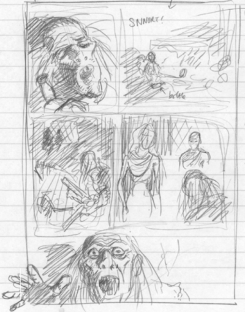
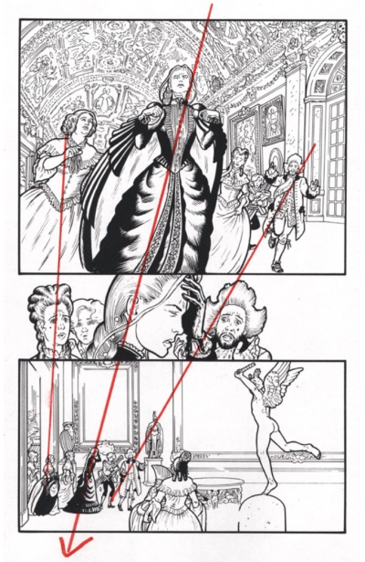
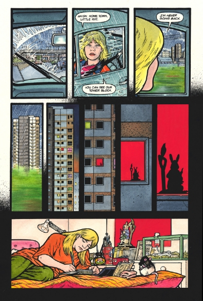

The 'Graphic Novel Man' Bryan Talbot takes you through the typical creative process he uses when writing and drawing one of his comic books, from the original conception to the finished graphic novel, covering all aspects of his work including research, plotting, story structure, scripting, the use of grids, panel transitions, page composition, layout, use of eye level, lettering and colouring.
Please note the title of the lecture: it says "How ‘I’ make a Graphic Novel" - while some insight of someone else’s technique can be very useful, you should use your own approach, develop your individual style, and most importantly, always follow the one simple rule: "If it works, do it".
Note: this is an abridged, concise version of Bryan Talbot’s lecture he gave at Loncon 3, 72nd Worldcon on Sunday, 17th August 2014. All illustrations and photos used in this article are copyrighted and can be used for reference purposes only.
★ carry a notebook with you at all times and when you get an interesting idea, scribble it down (either in writing or in drawing) otherwise you might forget it.
★ start developing these loose ideas into the individual scenes and establish a rough idea how these scenes relate to each other.
★ before starting with the actual story-telling, your storyline must have a rock-solid structure.
★ go outside and search for interesting places, buildings, characters and animals that you can use as an inspiration for your drawings and take reference photos of them; you can also ask your friends to pose for you in the postures that you require for the particular figures and individual scenes.
★ start writing the actual story and draw the so called 'roughs' (preliminary sketches or rough thumbnails) of the individual panels.
★ write the script (or, in case that you are making a comic based on someone else's script, read the script and familiarise yourself with it).
★ draw a floor plan (showing a view from above) of the rooms (e.g. study) and places (e.g. street) wherever you have more than one scene taking place in the same location. This will enable you to change the point of view (an imaginary camera) at will (which makes panels more interesting) and will also help you avoid consistency errors (such as you miss out an object which should be in the view when drawing from a particular angle) that might spoil the reader’s experience.
★ decide on what layout you will use for the individual pages of the comic; you can use a 'Grid' layout (where the page is broken by a grid into individual cells or panels) or 'Free Style' layout (where the page is unbroken and is used as a whole). In the former case, some of the most commonly used layouts are symmetric grids of 2x3, 3x3, 4x3 and 4x4 panels, but also uneven and asymmetric grids (or combination of both) can be used. Remember that the rules are there to be broken and if you come up with some radically new grid system, or an entirely new approach devoid of grids, don’t be afraid to use it if you think it will work.
★ Before starting with the actual drawing, decide where the speech bubbles go and make sure that the bubbles work well compositionally - this will save you a lot of problems later on. If you have a letterer, leave space for lettering, clearly mark where the speech bubbles go and make clear references for the letterer, so that he knows which text goes into which speech bubble.
★ Bear in mind that the reader sees two pages at once, so try to harmonise the left and right side. Ideally, finish every chapter or subplot on the right hand side; if this is not possible for some reason, make a clear distinction between the end of one sequence and start of another one, for example by a sudden and distinct change of the background colour. As far as the individual pages go, each page should be considered as a composition of the individual panels rather than a loose collection of them. Some comic creators draw the individual panels separately and then just stick them together on a page - but this is not a good practice.
★ Comic, as opposed to other media, such as film, works with still images, so the transition from one camera angle to another or from one location to another, isn’t always immediately apparent. The comic artist must therefore use other means to indicate the transition and help the reader follow the narrative through. One such technique is using 'Markers' for tracking the transition between the scenes. (Example: first panel shows the window of a tower block - a small statuette can be seen on the window sill; second panel shows the interior of a room - the same statuette resides on the window sill. The 'Marker', in this instance the statuette, helps to make the transition between two disconnected scenes and enables the reader to follow the 'camera' - he immediately understands that we are now inside that room in the tower block, and no explanatory text is required).
★ There are various techniques to indicate passing of time, one of which is gradual lengthening of shadows 'cast by the sun' and changing their direction as the time progresses. The reader may not see this subtle change consciously, but their subconscious will pick it up, helping them to follow the narrative time-wise as well as place-wise.
★ Personality of a character can be indicated by various means, one of which is dilation of pupils in close-ups. Contracted pupils usually indicate a nasty or cold-hearted person, while dilated pupils normally indicate a nice and loving personality.
★ Use distinct colours for the main characters - this way, you will make them stand out in a crowded scene.
★ The work on a typical comic book page starts with the Line Work (also called Pencilling), continuing with the Inking, Colour 'Flats', and the Shading, with the Lettering added as the last part of the process; since I don’t employ a letterer, I generally do my own lettering along with the inking.